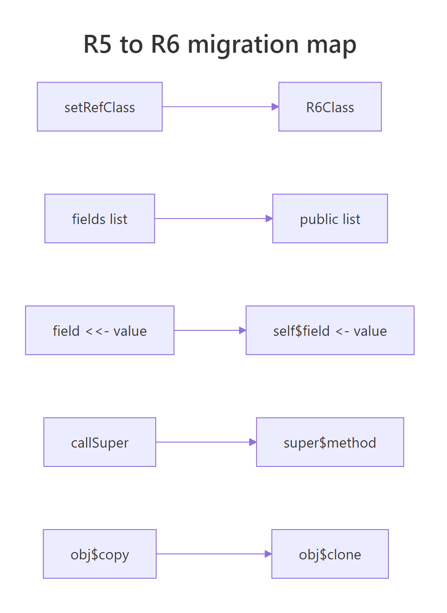
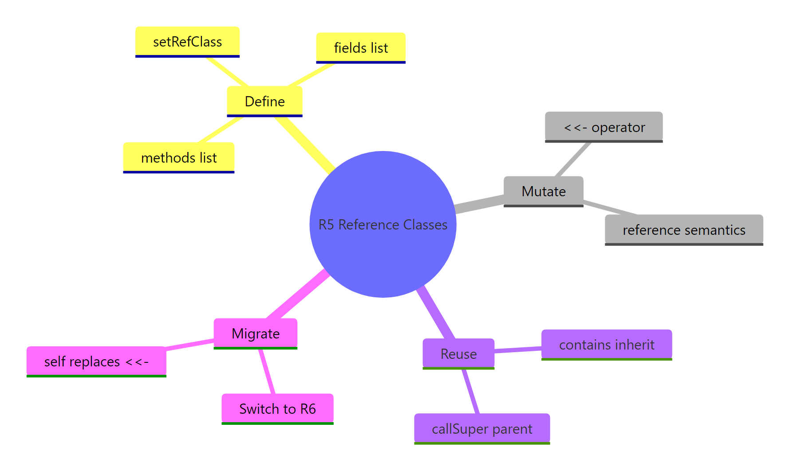

R5 Reference Classes in R: setRefClass(), Legacy OOP
R5 Reference Classes, also called Reference Classes or just R5, are base R's first OOP system where objects can change their own state in place instead of returning a new copy on every update. They are defined with setRefClass() and ship with base R, but the R6 package has largely replaced them in modern code.
What are R5 Reference Classes in R?
R5 lets a single object hold state and update itself in place. That mutability is the whole point, a counter can tick up, a config can change settings, and every variable pointing at the object sees the same update. Let's build a tiny Person class so the shape is concrete before we unpack any rules.
The class declares its data in a fields list and its behaviour in a methods list. Calling Person$new(...) creates an instance you talk to with $.
Notice that we never reassigned alice. A single call to have_birthday() changed alice$age from 30 to 31, and the second greet() call sees the new value. That in-place update is the entire reason R5 exists, every other R object would have forced you to write alice <- update(alice) and pass the new copy around.
methods package. No install or library() call is needed, setRefClass() is available the moment you start R.Try it: Define an ex_Car class with make and model fields and a describe() method that prints "<make> <model>". Test it on a Toyota Corolla.
Click to reveal solution
Explanation: Fields are referenced by bare name inside methods. cat() prints them with a space separator and a trailing newline.
Why does R5 use <<- instead of <- inside methods?
R5 methods run in their own little environment. A plain <- creates a local variable inside that environment, which vanishes the moment the method returns. To actually update the field stored on the object, you have to reach up the scope chain, and that's what <<- does.
Skip <<- and your "setter" looks fine but quietly does nothing. Let's prove it.
BadCounter$increment() runs without complaint, but two calls leave count at 0 because each call wrote to a throwaway local. GoodCounter uses <<-, so each call reaches up and rewrites the field, two calls, count of two.
<<- is a silent bug. R5 will not warn you that your setter did nothing. Any method that updates a field MUST use <<-, or you'll spend an hour debugging a "stuck" object.Try it: The ex_Tag class below has a broken set_label() method. Fix it so the test prints the new label.
Click to reveal solution
Explanation: Switching <- to <<- tells R to walk past the method's local scope and update the label field on the object itself.
How do reference semantics work in R5?
Most R objects follow copy-on-modify: assign a vector to a new name, change one, and the other is untouched. R5 objects deliberately break that rule. Assigning an R5 object to a new name creates an alias, not a copy, both names point to the same underlying object, and every change is visible to both.
If you genuinely want an independent snapshot, R5 gives you a built-in $copy() method.
c2 <- c1 did not duplicate anything, both names point at the same object, so incrementing c1 was the same as incrementing c2. c3 <- c1$copy() did duplicate, so c3 froze at 2 while c1 carried on.
Try it: Predict what ex_b$value will print after the increment, then run it to check.
Click to reveal solution
Explanation: ex_b <- ex_a aliases the same object, so bumping ex_a also bumps what ex_b is pointing at. Both see value = 15.
How does inheritance work with setRefClass()?
A child class declares its parent with contains = "Parent". Inside the child's initialize method, you call callSuper(...) to run the parent's constructor first, then add the child's own fields. Every method defined on the parent is automatically available on the child, and the child can override or extend any of them.
callSuper() runs Animal$initialize first, which populates name and sound, then the rest of Dog$initialize sets breed. When rex$describe() calls speak(), it's calling the inherited method on the same object, that's why it sees name = "Rex".
Try it: Add a Cat subclass of Animal with a purr() method that prints "<name> purrs.". Constructor should hard-code the sound to "Meow".
Click to reveal solution
Explanation: callSuper(name = name, sound = "Meow") runs Animal$initialize so the inherited speak() method finds the right values. The new purr() method is unique to Cat.
How do you convert R5 code to R6?
R6 is a small package that gives you the same reference-semantics OOP with cleaner syntax, faster dispatch, and proper private fields. Translation is mechanical once you know the four substitutions: drop setRefClass() for R6Class(), move fields into public, replace every <<- with self$, and swap callSuper() for super$initialize().

Figure 1: Mechanical mapping from R5's setRefClass() to R6's R6Class().
Here's the same Person class written in R6 alongside its R5 counterpart, so the substitutions are obvious side by side.
The behaviour is identical, what changed is only the surface syntax. self$age is more verbose than age <<-, but it removes the entire class of "I forgot the second arrow" silent bugs.
| R5 syntax | R6 syntax |
|---|---|
setRefClass("Name", fields = ..., methods = ...) |
R6Class("Name", public = ...) |
field <<- value |
self$field <- value |
contains = "Parent" |
inherit = Parent |
callSuper(...) |
super$initialize(...) |
obj$copy() |
obj$clone() |
Try it: Convert this R5 Greeter to R6 as ex_GreeterR6.
Click to reveal solution
Explanation: Every R5 field becomes a NULL slot in public. Every <<- becomes self$. Everything else stays the same.
Practice Exercises
Exercise 1: A BankAccount class in R5
Build an R5 BankAccount class with:
- A numeric
balancefield that defaults to 0 - A
deposit(amount)method that adds to the balance - A
withdraw(amount)method that refuses overdrafts (prints a message, leaves the balance unchanged) - A
show_balance()method that prints the current balance
Save the instance to my_account. Test by depositing 100, withdrawing 30, then trying to withdraw 1000.
Click to reveal solution
Explanation: Every state change uses <<-. The overdraft branch returns silently after printing instead of throwing, keeps the test clean and the balance untouched.
Exercise 2: Convert BankAccount to R6 and add a SavingsAccount subclass
Translate the BankAccount class to R6 as BankAccountR6. Then create SavingsAccount that inherits from it and adds an add_interest(rate) method that increases the balance by balance * rate. Test by creating my_savings with a starting balance of 1000 and applying a 5% interest rate.
Click to reveal solution
Explanation: R6 inheritance uses inherit = BankAccountR6. The subclass automatically picks up deposit, withdraw, and show_balance, we only add the new add_interest method.
Complete Example: A small experiment logger
Here is everything in one place. We'll build a Logger class that holds a list of timestamped log entries, exposes a log(msg) method to append to it, a last() method to read the most recent message, and a count() method for the total. Then we'll pass the logger to a helper function and watch it accumulate entries, proof that reference semantics actually work the way the earlier sections claimed.
The helper function received lg by reference, not by copy, so its three log() calls landed on the same object the caller still holds. After the function returns, lg$count() is 3 and lg$last() is "done". With ordinary R semantics you would have had to return the modified logger and reassign it, R5 makes that ceremony unnecessary.
Summary

Figure 2: The four moving parts of R5 Reference Classes at a glance.
| Concept | R5 syntax | Mental model |
|---|---|---|
| Define a class | setRefClass("Name", fields = ..., methods = ...) |
Schema for a stateful object |
| Update a field inside a method | field <<- value |
<<- walks up to the field's scope |
| Share an instance | b <- a |
Alias, not copy, both point at the same object |
| Make an independent copy | a$copy() |
Snapshot of the current state |
| Inherit from a parent | contains = "Parent" + callSuper(...) |
Parent constructor runs first, then child |
| Migrate to R6 | R6Class(..., public = list(...)) + self$field |
Same semantics, cleaner syntax |
R5 is worth knowing because you will meet it in legacy packages, Bioconductor, older shiny internals, and several network-analysis libraries still ship classes built with setRefClass(). For new code, reach for R6 instead: faster, more explicit, and free of the <<- silent-bug trap.
References
- R Core Team,
?setRefClass(base Rmethodspackage). Run?methods::setRefClassin any R session. - Wickham, H., Advanced R, 2nd ed. Chapter on R's OO systems. Link
- Chang, W., R6 package documentation. Link
- R6 vignette, "Performance" comparison vs Reference Classes. Link
- Chambers, J. M., Software for Data Analysis: Programming with R. Springer (2008). The reference text on R's formal class systems.
- Bioconductor Project, Common Bioconductor Methods and Classes (illustrates real-world R5/S4 use). Link
Continue Learning
- R6 Classes in R, the modern replacement for R5, with cleaner syntax and proper private fields.
- OOP in R: S3, S4, R5, R6 compared, how all four R OOP systems stack up and when to pick each.
- sloop Package in R, inspect any R object to find out which OOP system it belongs to.